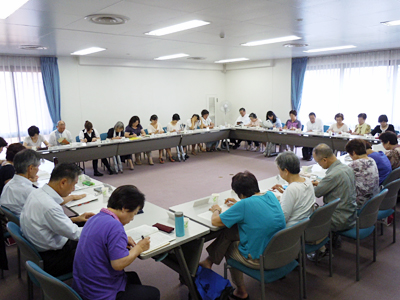

|
|
8月22日（木）午後1時30分より埼玉会館3B会議室で開催されました。実行委員会に参加する24団体35人が出席しました。  ■議題 1．自己紹介、第2回プレ学習会、前回の実行委員会について報告されました。 第2回プレ学習会で講演していただいた大村さんのお話しで、食品表示の内容やリスクの考え方など大いに勉強になり、今後も食の情報に関心を持とうという意識が高まったことが、アンケートからうかがえました。 2．第49回大会基調報告二次案について 消費者被害の問題･対策についての加筆や、私たちの消費者運動の成果を記述した二次案が提案され、意見交換をしました。さらに、県民の様子を知事につぶさに見てほしいこと、県内に避難されている福島の被災者の皆さんの住宅等の受け入れ体制に努力してほしいことなどを、県への要請に追加するよう、要望がありました。 3．全体会について プログラム、要員・実行委員の集合、弁当、参加集約、行事保険について確認しました。目標よりさらに参加を増やせるよう、各自よびかけを広げていこうとの提案を確認しました。広告の提供があった事業者の、学習会等への利用について呼びかけられました。 4．県との懇談会（案）について 大会後の懇談会について、開催予定日程、内容を確認しました。今回は県に要請書を仮提出し、回答を検討してもらうことなどが説明され、当日までの計画を確認しました。 5．県への要請・大会アピールへの意見・出欠・昼食・登壇者・受付について 次回の実行委員会までにFAX等での提出について要請がありました。 6．2013年度市町村消費生活関連事業調査 進行状況の報告と、調査結果を踏まえての行政担当者との懇談について説明されました。 7．分科会について 各分科会の責任団体から、分科会の進捗について報告されました。その後、分科会ごとの担当に分かれて、テーマや助言者について話し合いました。 |